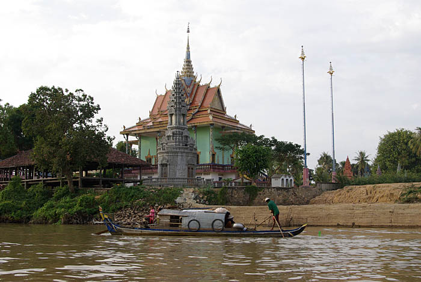

នគរភ្នំ — នគរដំបូង
រដ្ឋសមុទ្រដែលទទួលឥទ្ធិពលឥណ្ឌា ជួញដូរសូត្រ មាស និងគ្រឿងទេស — និងជាកន្លែងកំណើតនៃរឿងព្រេងរបស់ប្រជាជនខ្មែរ។
រដ្ឋសមុទ្រ
នគរភ្នំ ជារដ្ឋដំបូងគេបង្អស់មួយនៅអាស៊ីអាគ្នេយ៍ដែលទទួលឥទ្ធិពលឥណ្ឌា។ វាជាកំពង់ផែពាណិជ្ជកម្មដ៏ធំ ស្ថិតនៅលើផ្លូវជួញដូរតភ្ជាប់ពិភពមេឌីទែរ៉ាណេ ឥណ្ឌា និងចិន។ សូត្រ មាស គ្រឿងទេស និងគំនិត បានហូរកាត់ទឹកដីនេះ។
រាជធានីស្ថិតនៅតំបន់អង្គរបូរី និងភ្នំដា ក្នុងខេត្តតាកែវសព្វថ្ងៃ។ រូបចម្លាក់នៅភ្នំដា ជាឧទាហរណ៍ចំណាស់ជាងគេបំផុតនៃសិល្បៈចម្លាក់ខ្មែរ។
រឿងព្រេងកំណើត
រឿងព្រេងរបស់ព្រះថោង (កៅណ្ឌិន្យ) និងនាងនាគ កើតនៅសម័យនេះ។ ព្រាហ្មណ៍ឥណ្ឌាម្នាក់បានរៀបអាពាហ៍ពិពាហ៍ជាមួយព្រះនាងនាគ ជាបុត្រីរបស់ស្តេចនាគ — ហើយពីការរួបរួមនេះ ប្រជាជនខ្មែរបានកើតឡើង។
រឿងនេះមិនមែនគ្រាន់តែជារឿងនិទានទេ៖ វាជាមូលដ្ឋានគ្រឹះនៃអត្តសញ្ញាណខ្មែរ។ ស្តេចអង្គរជំនាន់ក្រោយៗ បានទទួលមរតកការគោរពព្រះនាគ និងភ្នំពិសិដ្ឋពីសម័យនេះ។
ឥទ្ធិពលឥណ្ឌា
ពីឥណ្ឌា បានមកដល់ភាសាសំស្ក្រឹត ច្បាប់មនុស្សស្ម្រិតិ អក្ខរក្រមបែបឥណ្ឌា និងសាសនាហិណ្ឌូ — ជាពិសេសការគោរពព្រះវិស្ណុ។ ប៉ុន្តែខ្មែរមិនបានចម្លងដោយងងឹតងងល់ទេ៖ ពួកគេបានបញ្ចូលគំនិតទាំងនេះចូលទៅក្នុងវប្បធម៌ផ្ទាល់ខ្លួន បង្កើតបានជាអរិយធម៌ថ្មីមួយ។
រដ្ឋដែលមានការរៀបចំកណ្តាល ការគោរពភ្នំពិសិដ្ឋ និងរឿងព្រេងនាគ — មរតកទាំងនេះនឹងត្រូវបានទទួលមរតកដោយស្តេចអង្គរជំនាន់ក្រោយ ហើយនឹងឆ្លាក់ចូលទៅក្នុងថ្មអស់រយៈពេលជាងមួយពាន់ឆ្នាំ។